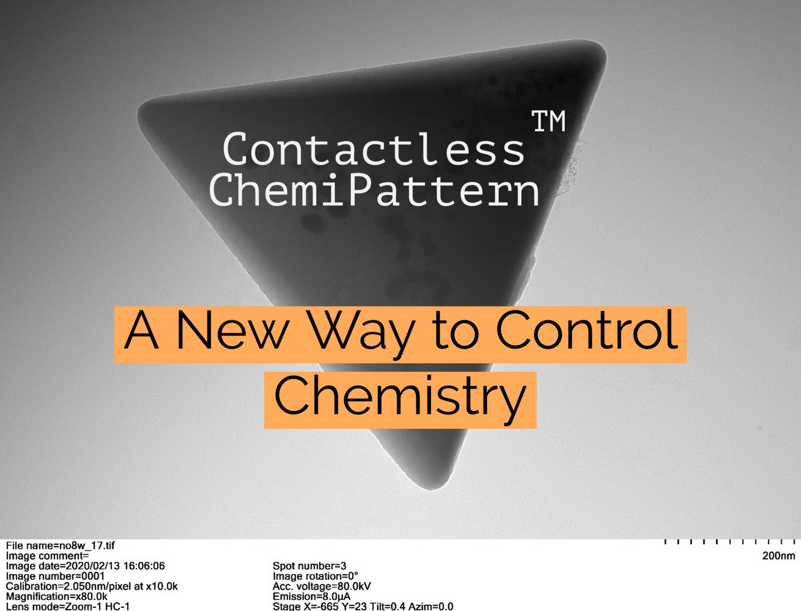
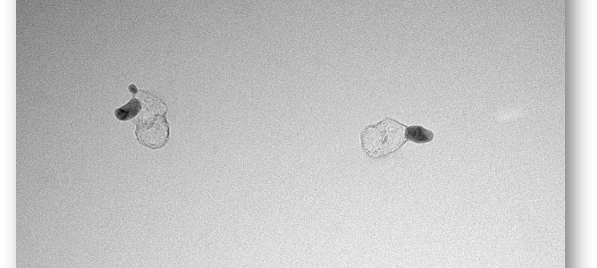
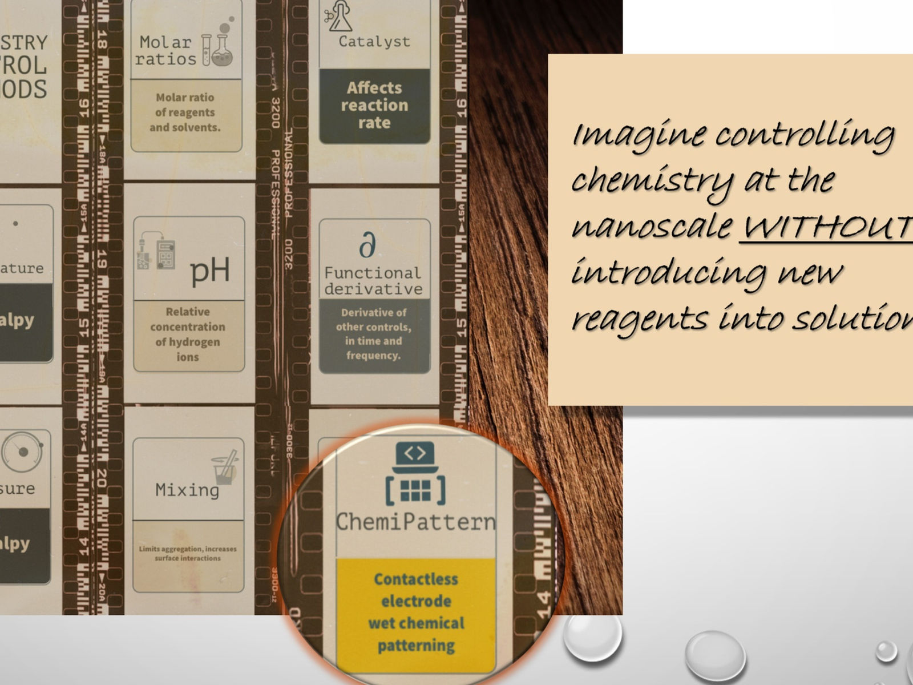
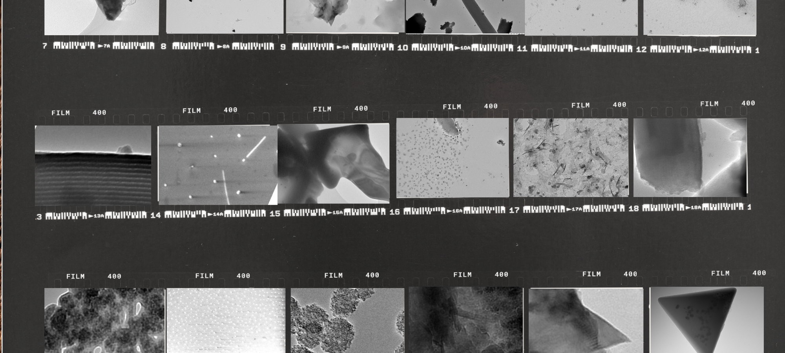

A Frontier Company Doing Frontier Innovation.
Terraform Water
We are actively working on cleaning Oil & Gas Produced water to levels previously unachievable.
Learn MoreOur Vision
At LOJO Engineering, we actively champion American frontier technology, advancing nanotechnology engineering across vital sectors such as semiconductors, pharmaceuticals, nanoparticle synthesis, and water treatment. Utilizing our patented Contactless ChemiPattern™ technology, we enable precise nanoscale control without introducing new reactants, enhancing yield, uniformity, and resilience. Our dedicated team fosters innovation and collaboration, unlocking untapped potential in metamaterials and driving the revolution of industries to create a more resilient future for all.
Our Platform Technology
Utilizing our patented Contactless ChemiPattern™ nanotech, we control chemistry with electric fields, to revolutionize industrial chemistry.


PseudoMem Hydro™
Our first application of ChemiPattern™ Technology addresses water purification challenges.
Learn MoreMORE ABOUT OUR TECHNOLOGY
Imagine controlling chemistry at the nanoscale by patterning nucleation, solubility, polymerization, and pH without introducing any new reagents into solution.
- Wet chemistry is notoriously difficult to control. Slight changes in temperature, pH, and chemical concentrations have dramatic impacts on product characteristics. As a results, nanoparticle synthesis processes are high-cost, low-yield, and scale poorly.
- With our technology you can control wet-chemical processes at the nanoscale without introducing any new materials or reactants into the solution. That’s why it’s contactless.
- We can spatially modulate pH gradient, reaction rates, dampen thermodynamic potential distortions, and redistribute charge during chemical reactions. We can pattern nucleation, solubility, polymerization, and rapidly grow isotropic nanoscale features.
- ChemiPattern™ can enhance yield and uniformity. Reduce time to market for new products. Though the most exciting aspects of ChemiPattern™ processes are their ability to create new materials that have otherwise been impossible: metamaterials.

